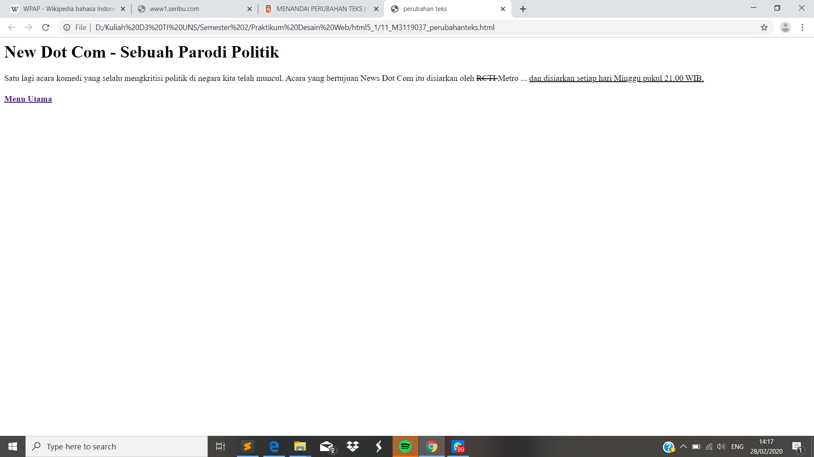

Perubahan Teks
//Perubahan teks digunakan apabila kita ingin mengubah teks pada html dalam sebuah konten halaman web dengan diberi tanda. Hal ini bertujuan supaya para pembaca mengetahui perubahan yang kita lakukan. Untuk perintah menghapus dapat menggunakan perintah <del> dan diakhiri dengan </del>. Sedangkan untuk memberikan tanda sisipan baru dapat menggunakan perintah <ins> dan diakhiri dengan </ins>
Codingan
<!DOCKTYPE html>
<html>
<head>
<meta charset="UTF-8">
<title> perubahan teks </title>
</head>
<body>
<h1> New Dot Com - Sebuah Parodi Politik </h2>
<p>
Satu lagi acara komedi yang selalu mengkritisi politik di negara kita telah muncul. Acara yang bertujuan News Dot Com itu disiarkan oleh <del> RCTI </del> Metro ... <ins> dan disiarkan setiap hari Minggu pukul 21.00 WIB.</ins></p>
<h4> <a href="index.html">Menu Utama </a> </h4>
</body>
Tampilan Hasil Percobaan

Kesimpulan
Pada percobaan perubahan teks ini kita dapat menandai sebuah perubahan pada html dengan mmenghapus dengan tanda coret maupun menyisipkan pesan dengan tanda garis bawah.